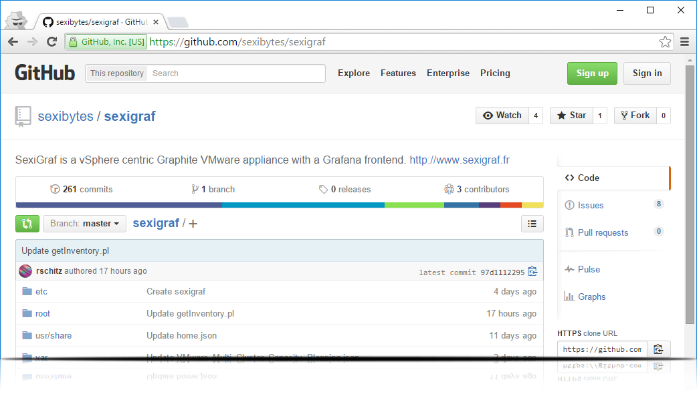
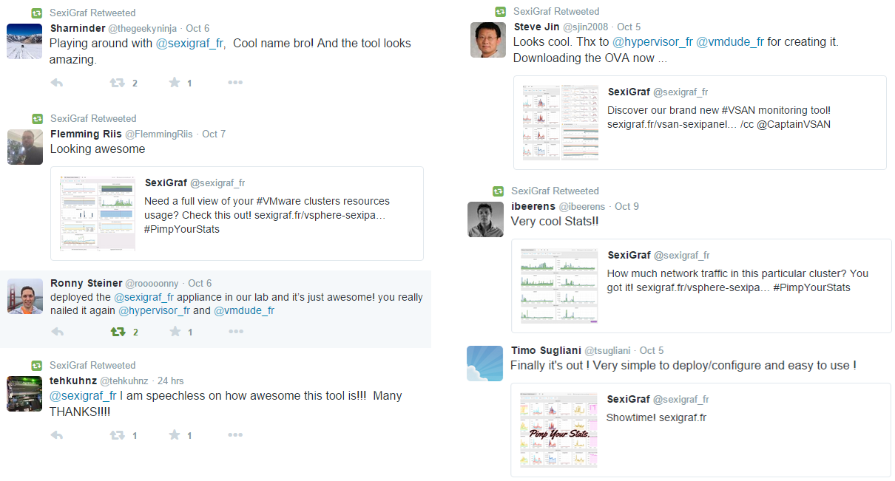

Turlutte Abstract/pool/automate
“Since the beginning, life has relied upon the transmission of messages.”
Who
@vmdude_fr
@hypervisor_fr
@sexigraf_fr
Come get some on #sexigraf (Twitter and IRC)
What
SexiGraf is a fully open-source vSphere centric Graphite VMware appliance with a Grafana frontend. It pulls VI and VSAN metrics from VMware vCenter APIs and produce the gorgeous dashboards we love so much!
GitHub
Blueprint
Why
- Nothing fit better for free
- Fast, very fast
- Metric/Performance history
- Aggregation possibility
- Cross Objects visualization
How
- Metrics, metrics and a lot of metrics
- SexiPanels:
- VSAN
- vSphere
- Web Admin Tools (Offline Inventory, Log Viewer)

Where
- Adding VM stats/panels as well
- Additional panels planed:
- Windows
- HP C7000
- Virtual Connect Module
- OpenZFS
SexiStats
- 1000+ downloads in 3 days
- 3000+ downloads in 2 months
- ~20 downloads per day

Good feedback...
...Not so good